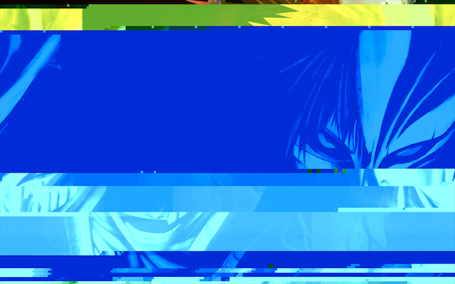
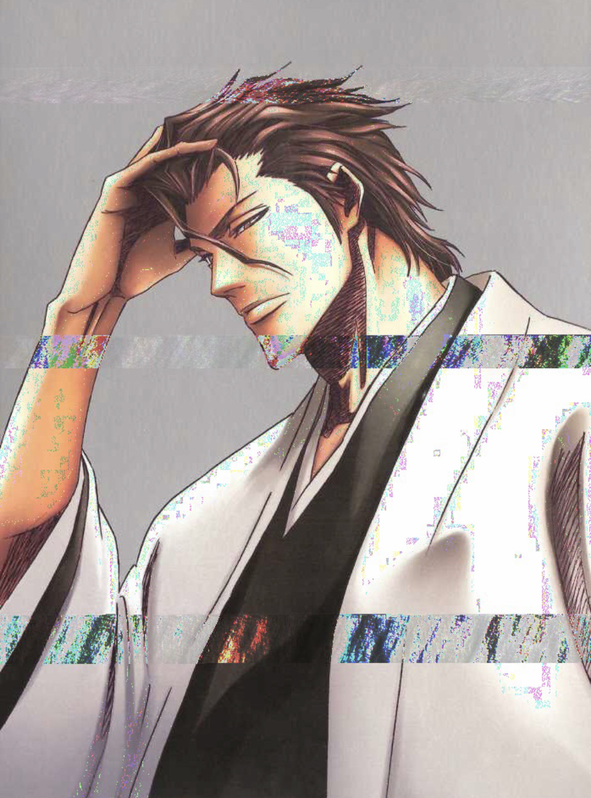
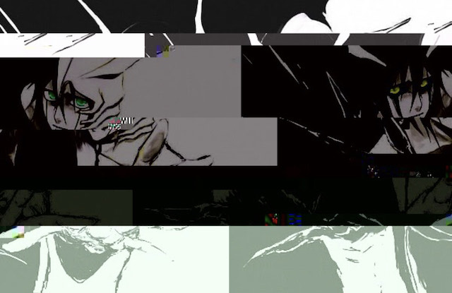

"Hichigo Glitch"
The main character in "Bleach", Ichigo, in his hollowfication state, a state of insanity.
Medium(s): TextEdit

"Aizen Glitch"
The main antagonist in "Bleach," Sosuke Aizen, is first seen as a kind man. His betrayal shocks everyone as he ascends into another world.
Medium(s): Audacity

"Ulquiorra Glitch"
One of Aizen's lieutenants, Ulquiorra Cifer, is inspired by one of the aspects of death: depression. He is portrayed as a lifeless character, showing little emotion.
Medium(s): TextEdit